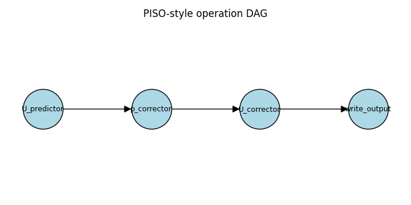

Note
Go to the end to download the full example code.
Visualize the operation DAG¶
When a solver’s operation order doesn’t match what you expect, render the dependency graph and inspect it directly. The graph package exposes one function for the common case and a pyvis writer for interactive HTML.
Render a single domain’s DAG to HTML¶
After runtime.execution_graph() produces a StepBuilder /
OperationCollection, you can read each operation’s
OperationMetadata and feed it to dependency_dag().
Open dag.html in a browser. Nodes carry the op_name,
operation_number, and shape / color hints from the
metadata; edges follow the resolved depends_on / before
relationships.
from typing import Any
import matplotlib.pyplot as plt
import networkx as nx
from neofoam.framework.graph import (
build_dependency_digraph,
dependency_dag,
digraph_to_pyvis_html,
validate_dependency_graph,
)
def render_solver_dag(runtime: Any, out: str = "dag.html") -> None:
builder, model_ops = runtime.execution_graph()
metas_by_domain = {
"main": [op.metadata for op in builder.operations.ops]
+ [op.metadata for op in model_ops.ops],
}
graph = dependency_dag(metas_by_domain)
digraph_to_pyvis_html(graph, out)
A worked example¶
Build a small PISO-style dependency graph and render it two ways:
inline as a static figure (so it appears below this cell on the
docs page), and as an interactive dag.html you can open in a
browser to drag nodes and inspect edges. The same
networkx.DiGraph feeds both renderers.
graph = build_dependency_digraph(
{
"U_predictor": [],
"p_corrector": ["U_predictor"],
"U_corrector": ["p_corrector"],
"write_output": ["U_corrector"],
}
)
fig, ax = plt.subplots(figsize=(7, 3.5))
layout = {
"U_predictor": (0, 0),
"p_corrector": (1, 0),
"U_corrector": (2, 0),
"write_output": (3, 0),
}
nx.draw(
graph,
pos=layout,
ax=ax,
with_labels=True,
node_color="lightblue",
node_size=2400,
edgecolors="black",
font_size=9,
arrowsize=18,
)
ax.set_title("PISO-style operation DAG")
fig.tight_layout()
# Same graph, written to an interactive pyvis page.
digraph_to_pyvis_html(graph, "dag.html")

Inspect without rendering¶
The intermediate networkx.DiGraph is plain networkx —
you can call graph.predecessors(name), graph.successors(name),
or nx.find_cycle(graph) directly. Useful inside tests or while
debugging.
assert list(graph.successors("U_predictor")) == ["p_corrector"]
print("successors of U_predictor:", list(graph.successors("U_predictor")))
successors of U_predictor: ['p_corrector']
Validate before you resolve¶
If you only want to know whether a graph is well-formed (no
duplicates, no missing dependencies, no cycles) use
validate_dependency_graph() — it returns a
GraphValidationReport you can inspect without raising.
report = validate_dependency_graph(
node_names=["A", "B", "C"],
dependencies_by_node={"A": [], "B": ["A"], "C": ["B", "missing"]},
)
if not report.is_valid:
for diagnostic in report.diagnostics:
print(diagnostic.code, diagnostic.message)
missing_dependency InitStep 'C' depends on 'missing', but 'missing' was not found
See also¶
Operations and the DAG — design rationale and the resolver pipeline.
neofoam.framework.graph.visualization — full API.
Total running time of the script: (0 minutes 0.080 seconds)